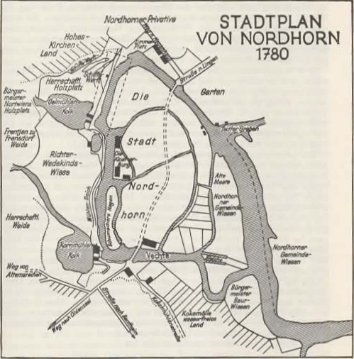

Nordhorn
Das Stadtzentrum von Nordhorn ist der Ort, an dem die Stadt Nordhorn ihren Ursprung fand: das Gebiet zwischen den beiden Vechtearmen. Heute wird es Innenstadt oder auch Vechteinsel genannt. Doch dieses Gebiet war nicht immer nur die Vechteinsel. Tatsächlich bestand der Bereich zwischen den beiden Vechtearmen, wie wir ihn kennen, aus vielen kleinen Inseln, unterteilt durch die Binnenvechtearme. Die einzige dieser Binnenvechten, die die Zeit überdauerte, ist das Verbindungsstück zwischen der alten Kornmühle und der Ölmühle (heute das Wehr). An diese Binnenvechte grenzten einst die Burginsel und Schuhmachers Hagen, zwei der kleinen Inseln, die bereits nicht mehr bestehen.
Die Burginsel, mit der auf ihr erbauten Burg, gehörte zunächst dem Grafen von Bentheim entwickelte sich dann aber zu einer Kirche. Dieses geschah durch die Einwirkung des Klosters, wodurch erst das Recht dort Gottesdienste abzuhalten gegeben war. Später wurde, nach einem Brand, eine neue Kirche gebaut. Seit 1913 ist die Augustinuskirche fertig und begehbar. Durch die Entwicklung hin zu einer Kirche wurden dann auch die Burggräben nutzlos und zugeschüttet. Somit hatte die Innenstadt eine Insel weniger.
Schuhmachers Hagen, welches lange von der Schuhmachergilde zum Gerben des Leders genutzt, wurde blieb auch keine eigenständige Insel. Aus der Literatur geht hier und bei den anderen Binnenvechten nicht hervor, wann diese an die große Insel angegliedert wurden. Vermuten lässt die Literatur, dass diese Vechtearme ab 1800 zugeschüttet wurden als Nordhorn anfing zu expandieren und Probleme hatte, weitere Bauplätze innerhalb der Stadtgrenzen zu finden. Der einzige Teil der Vechteinsel, der von damals bis heute größtenteils gleich geblieben ist, ist der Verlauf der Hauptstraße mittig über die Vechteinseln. Zwar wurden häufiger Anträge gestellt, die Hauptstraße mit Vorgärten oder weiteren Grundstücken zu verschmälern, diese wurden jedoch recht schnell wieder abgelehnt. Des Weiteren blieb auch die Ochsenstraße unverändert.

Zurück zur Hauptseite